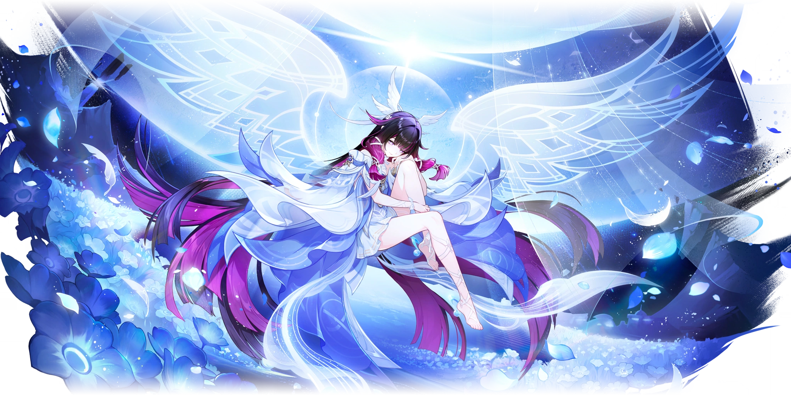

Дева Луны, рождённая в Нод-Крае, она же небесная луна, что вернулась домой.

Коломбина — лунная богиня, известная как Куутар или Дева Луны, почитаемая Детьми Морозной Луны.
Ранее она носила титул «Субретка» как третья из Одиннадцати Предвестников Фатуи. После ухода из Фатуи скрылась в Чертоге серебряной Луны на острове Хийси.